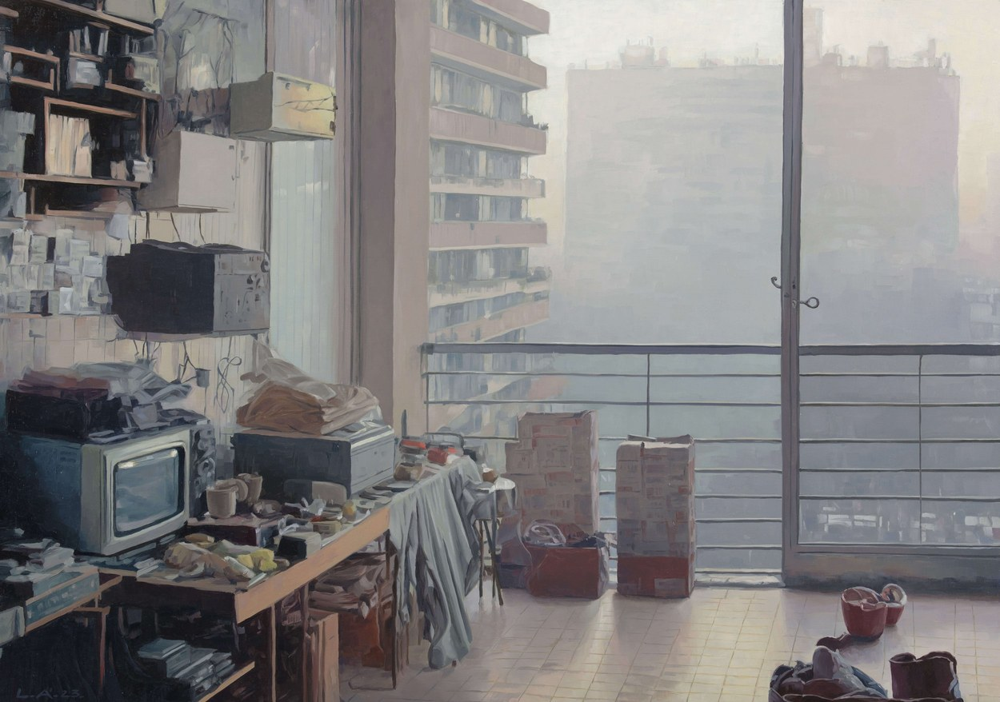
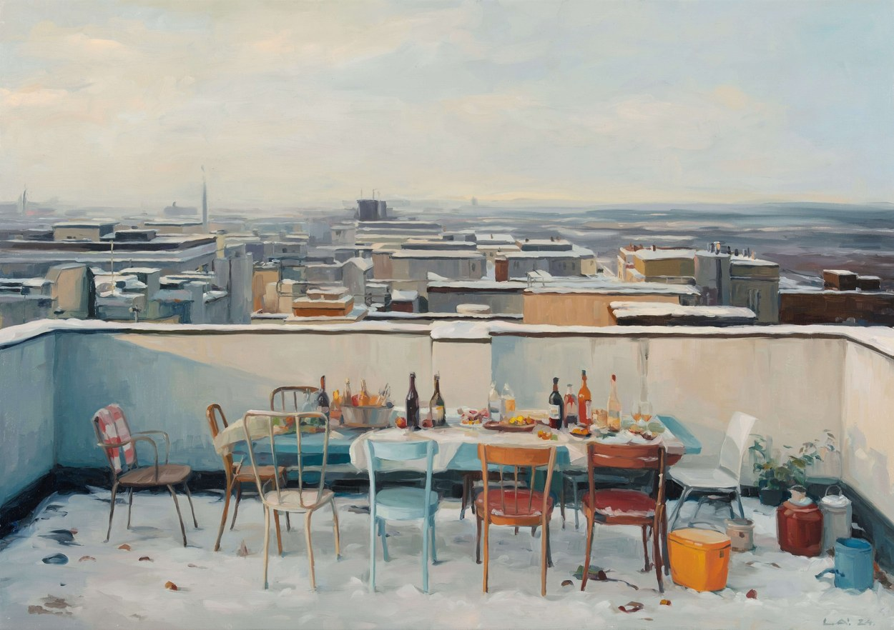

Vestigia Vitae
oil paintings based on digital constructions
Balconies as small, uninhabited stages, where light, outlook and the things left behind compose their own quiet order. Rooted in reality yet slightly removed from it, these spaces rest on realistic perspective and natural light.
The story comes from what is absent. No one appears, yet the balconies feel full of presence, held in suspended and uncertain states where the visible meets the invisible. Each one becomes a threshold the viewer crosses with their own memories, recognising something felt before it can be named.

